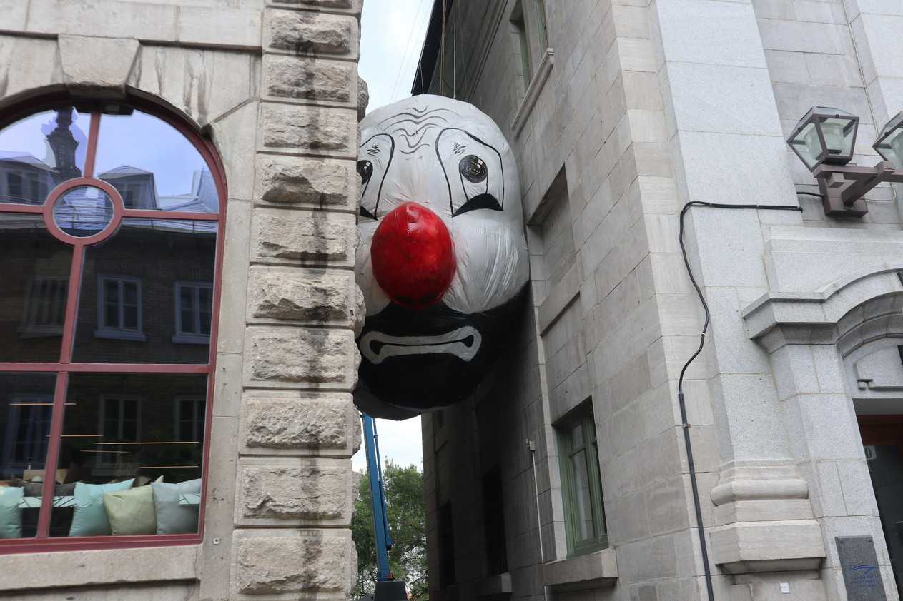
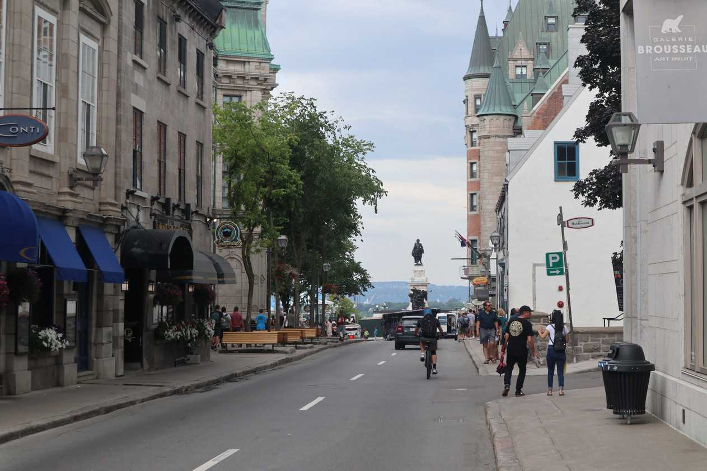

Typical roadOne of the many churches. There are lots of beautiful churches in the province of Quebec.
Today I made it to Quebec City. The weather was sunny and roads hilly at times. I kept racing these bicyclists. I kept passing them when they were on break and then once they hit the road they would pass me as they had no panniers.
The bus of the bicyclists. They were raising money for MS research.The bicyclists passing me.Quebec city respects bicyclists. In residential areas you have to park your car in such a way to allow enough space for bikes to pass through. Crossing this giant bridge is mandatory if you are visiting Quebec.View of the bridge from the side.Old Quebec City 1Old Quebec City 2Old Quebec City 3Old Quebec City 4
Old Quebec city seemed small and populated with many tourists. Part of the city was on a giant hill. Biking up to it took a little bit of effort.
Biking through Quebec city. Lots of tourists eating at the restaurants.
I stayed across the river from Quebec city at a campground for two nights as it was my scheduled rest day. I spent my rest day biking around Quebec city and exploring it. I noticed that the city has a lot of balconies in the residential areas facing the road. I think it is good idea. At the campground I met a fellow tourist who was biking around Quebec. His air mattress had a hole and I patched it up with my Gorilla tape. He previously had travelled from Quebec to the east coast - a good adventure if you're strapped with cash or time.
Sculpture 1 - Jeffrey Poirier

Sculpture 2 - Max Streicher

"Here, on historic Cape Diamond justly retaliating Hurons burnt captured Iroquois alive but every burning Iroquois sang his defiant death song, quite unflinchingly, till his last dying breath. 17 Century" - seeing this in the middle of very touristy area close to the heart of Quebec City was refreshing. A reminder of how bad things can truly get and to be grateful! In front of an art gallery. What does it mean to you?